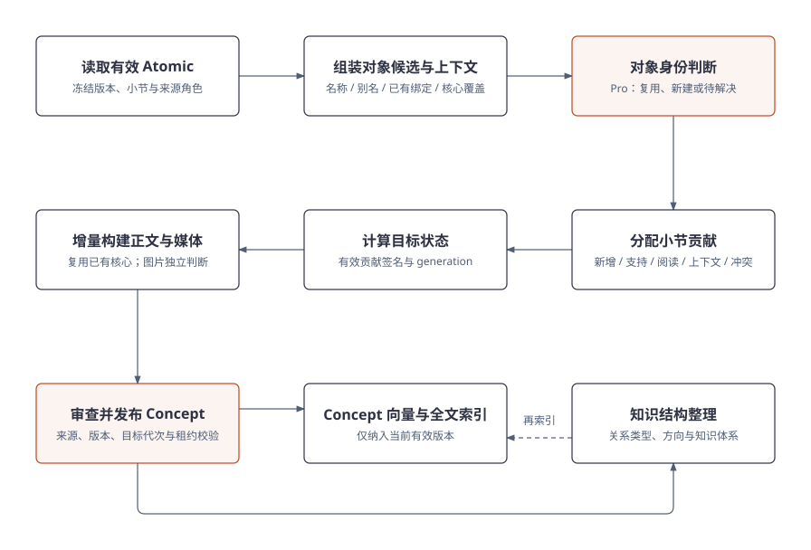
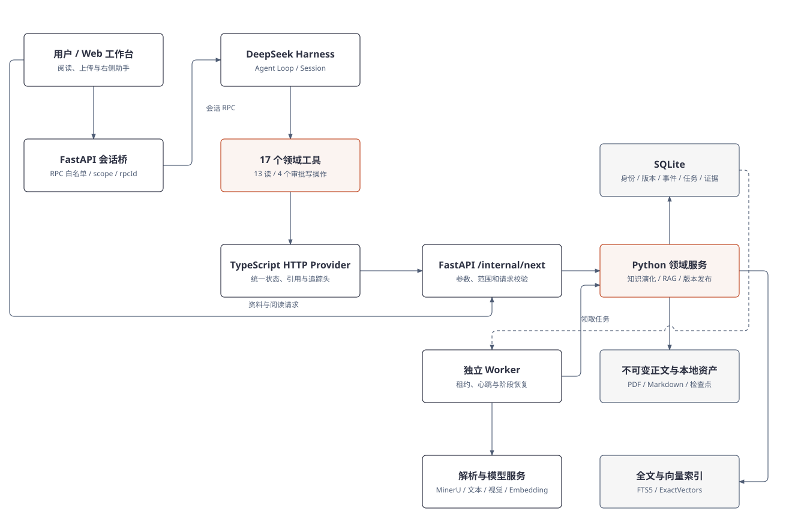
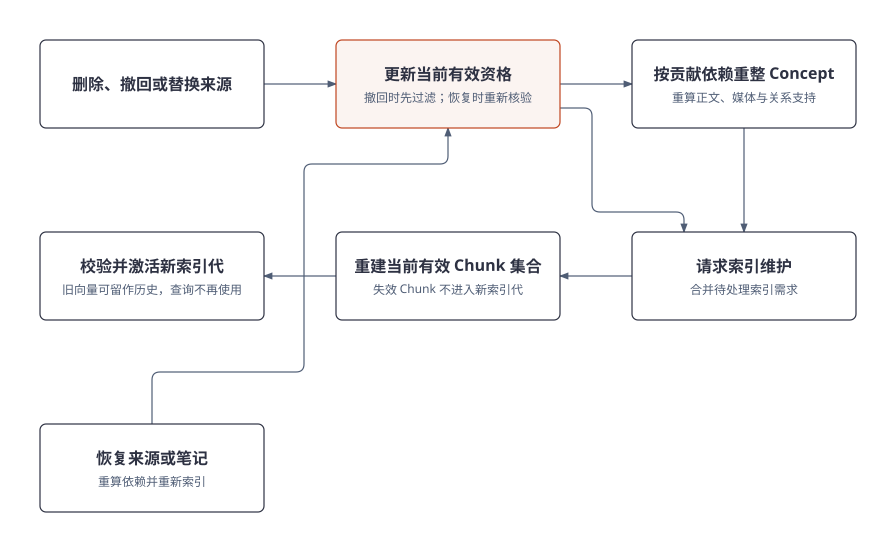

<!doctype html><html lang="zh-CN"><meta charset="utf-8"><meta name="viewport" content="width=device-width,initial-scale=1"><title>Noodle Agent 项目流程图</title>
<style>body{margin:0;background:#fff;color:#2d3142;font:15px/1.7 'Microsoft YaHei',sans-serif}nav{padding:16px 24px;display:flex;flex-wrap:wrap;gap:12px 24px;border-bottom:1px solid #ddd}a{color:#bf4520}figure{margin:24px auto 64px;max-width:1320px}img{display:block;width:100%;height:auto}figcaption{font-size:14px;padding:12px 24px;color:#4f5d75}section{padding:0 16px}</style>
<nav><a href="#evolution">知识演化</a><a href="#atomic">Atomic</a><a href="#concept">Concept</a><a href="#agent">Agent 架构</a><a href="#index">索引构建</a><a href="#rag">RAG</a><a href="#delete">删除恢复</a></nav>
<section>
<figure id="evolution"><figcaption><a href="01-knowledge-evolution.svg">打开图 1</a> · <a href="01-knowledge-evolution.html">HTML 源图</a></figcaption></figure>
<figure id="atomic"><figcaption><a href="02-atomic-generation.svg">打开图 2</a> · <a href="02-atomic-generation.html">HTML 源图</a></figcaption></figure>
<figure id="concept"><figcaption><a href="03-concept-maintenance.svg">打开图 3</a> · <a href="03-concept-maintenance.html">HTML 源图</a></figcaption></figure>
<figure id="agent"><figcaption><a href="04-agent-architecture.svg">打开图 4</a> · <a href="04-agent-architecture.html">HTML 源图</a></figcaption></figure>
<figure id="index"><figcaption><a href="07-index-build.svg">打开图 7</a> · <a href="07-index-build.html">HTML 源图</a></figcaption></figure>
<figure id="rag"><figcaption><a href="05-rag-retrieval.svg">打开图 5</a> · <a href="05-rag-retrieval.html">HTML 源图</a></figcaption></figure>
<figure id="delete"><figcaption><a href="06-invalidation.svg">打开图 6</a> · <a href="06-invalidation.html">HTML 源图</a></figcaption></figure>
</section></html>
